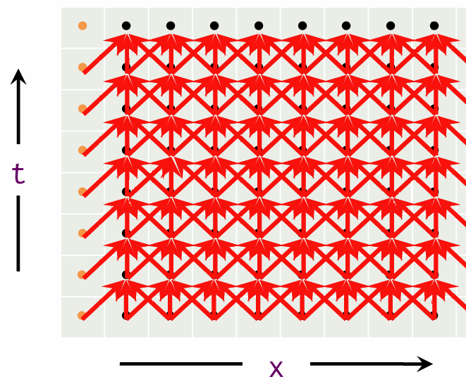

deadline 2024.12.12 00:00
CSAPP第6章配套实验。
本实验的目的是加深同学们对高速缓存cache认识。实验分为三个部分：
part A：用c语言设计一个cache模拟器，它能读入特定格式的trace文件（trace文件中模拟了一系列的对存储器的读写操作），并且输出cache的命中、缺失、替换次数；我们会为你提供一部分代码
part B：根据特定的cache参数设计一个矩阵转置的算法，使得矩阵转置运算中cache的miss次数尽可能低。
part C：设计一个 Cache Oblivious 算法
本次实验参考CMU CSAPP课程的Cache Lab。
考虑到pj将至，助教将本次lab的难度相较于原版调低了一些（除了honor-part，但honor-part的分数很少），而且本次实验全程用c语言（可以不用和抽象的汇编打交道了），所以大家不用过于担心~~~
part A: 40%
part B: 34%
part C: 11%
实验报告+代码风格：15%
从 Github Classroom 中clone本次作业仓库
在终端中检查是否安装了 gcc：
1 | gcc -v |
如果已安装，终端将会反馈版本信息，否则会反馈 command not found 。
如未安装，尝试执行以下命令进行安装：
1 | sudo apt-get install gcc |
检查是否安装 make，在终端输入：
1 | make -v |
同理，如未安装，尝试以此执行以下命令：
1 | sudo apt-get update |
1 | python3 --version |
一般情况下系统是自带python的
如未安装，请自行上网搜索安装教程
1 | sudo apt-get install valgrind |
设计一个cache模拟器，读入指定格式的trace文件，模拟cache的运行过程，然后输出cache的命中、缺失、替换次数
trace文件是通过valgrind的lackey工具生成的，它具有以下格式
1 | I 0400d7d4,8 |
每行格式为
1 | [space]operation address,size |
其中I代表读指令操作，L代表读数据操作，S代表写数据操作，M代表修改数据操作（即读数据后写数据）。除了I操作外，其他操作都会在开头都会有一个空格。address为操作的地址，size为操作的大小（单位为字节）。
你的所有实现都在csim.c和csim.h中
你的全局变量和函数需要定义在csim.h中，你的函数实现需要在csim.c中
我们提供了一个csim-ref的文件，是一个参考实现，你可以通过它来检查你的实现是否正确，它的用法如下：
1 | ./csim-ref [-hv] -s <s> -E <E> -b <b> -t <tracefile> -q <policy> |
-h代表帮助
-v代表verbose，即输出详细信息
-s代表cache的set数
-E代表每个set中的cache line数
-b代表cache line的大小（单位为字节）
-t代表trace文件的路径
-q代表cache line的替换策略，0代表LRU 1代表2Q
csim-ref会输出cache的命中、缺失、替换次数，比如：
x# verbose = false./csim-ref -s 16 -E 1 -b 16 -t traces/yi.tracehits:4 misses:5 evictions:3
# verbose = true$ ./csim-ref -v -s 16 -E 1 -b 16 -t traces/yi.traceL 10,1 miss M 20,1 miss hit L 22,1 hit S 18,1 hit L 110,1 miss eviction L 210,1 miss eviction M 12,1 miss eviction hit hits:4 misses:5 evictions:3你的实现需要具有和csim-ref相同的功能，包括verbose模式输出debug信息
在csim.c中，我们已经为你提供了基本的解析命令行参数的代码，你需要在此基础上进行实现
你需要将cache的替换策略改为LRU算法与2Q算法
2Q算法传统的 LRU 策略虽然简单，但存在以下几个问题：
缓存污染问题：
当访问模式中出现大量 “一次性访问” 的数据时，这些数据会占据缓存空间，导致真正频繁使用的数据被驱逐。
例如，如果缓存大小为 4，而访问序列为 A -> B -> C -> D -> E -> A -> B -> C -> D，则 E 的一次性访问会导致 A, B, C, D 被逐出缓存，影响命中率。
短期热点问题：
如果某些数据短时间内被频繁访问（称为短期热点），LRU 会将其直接提升为缓存中的重要数据，但热点可能很快消失，导致缓存效率下降。
2Q 策略通过引入两个队列解决了这些问题：
短期访问的数据首先进入 A1-in，而不是直接进入长期队列 Am。
如果数据再次被访问，才会被提升到长期队列 Am，表明其具有长期价值。
Tip
请你思考，相对于LRU的替换策略，为什么2Q有以上优点却没有被大规模使用。 （1分）
2Q 策略的缓存分为两个队列：
A1-in（FIFO 队列）：
用于存储最近访问的缓存数据。
这是一个短期队列，本实验的大小设计为与每个set中的cache line数相同。
数据首次访问时会被插入到 A1-in队尾。
如果 A1-in 已满，采用FIFO（先进先出）策略。
Am（LRU 队列）：
用于存储频繁访问的缓存数据。
这是一个长期队列，本实验的大小设计为与每个set中的cache line数相同。
只有当 A1-in 中的数据被再次访问时，才会被提升到 Am。
如果 Am 满了，新数据会替换最久未使用的数据（LRU 替换）。
只有从cache中删除，才算eviction。
检查 Am：
如果数据在 Am 中，命中缓存（hit），更新数据在 Am 中的 LRU 状态，将其移到队尾。
检查 A1-in：
如果数据在 A1-in 中，不算命中（miss），但将其从 A1-in 中移除，并提升到 Am。
如果 Am 满了，按照 LRU 策略移除最久未使用的数据。
不在缓存中：
如果数据既不在 A1-in 也不在 Am，则是一次完全的未命中（miss）。
将数据插入到 A1-in。
如果 A1-in 满了，按照 FIFO 策略移除最早插入的数据。
你的代码在编译时不能存在warning
你 只能 使用c语言来实现（助教看不懂c++和python）
虽然给了测试数据，但不允许面向数据编程，助教会做源码检查；不允许通过直接调用csim-ref来实现
共有10项测试
xxxxxxxxxx$ ./csim -s 1 -E 1 -b 12 -t traces/yi2.trace -q LRU$ ./csim -s 4 -E 2 -b 20 -t traces/yi.trace -q LRU$ ./csim -s 2 -E 1 -b 20 -t traces/dave.trace -q LRU$ ./csim -s 2 -E 1 -b 16 -t traces/trans.trace -q LRU$ ./csim -s 2 -E 2 -b 16 -t traces/trans.trace -q LRU$ ./csim -s 2 -E 4 -b 16 -t traces/trans.trace -q LRU$ ./csim -s 5 -E 1 -b 32 -t traces/trans.trace -q LRU$ ./csim -s 5 -E 1 -b 32 -t traces/long.trace -q LRU$ ./csim -s 5 -E 1 -b 32 -t traces/trans.trace -q 2Q$ ./csim -s 5 -E 1 -b 32 -t traces/long.trace -q 2Q
得分为：前7项每项3分，最后3项6分，共39分；对于每一项，hit, miss, eviction的正确性各占1/3的分数
最终的分数可以通过python3 ./driver.py来查看
使用malloc和free来构造cache
你可以使用csim-ref来检查你的实现是否正确，通过开启verbose模式可以更好地debug
LRU算法可以简单地使用计数器的实现方式
你可以使用queue.h来进行构建，也可以自己编写其他的数据结构进行实现
对于具体如何实现没有太多要求，大家八仙过海各显神通~~~
cache为何被称为“高速缓存”，是因为读取cache的速率远快于读取主存的速率（可能大概100倍），因此cache miss的次数往往决定了程序的运行速度。因此，我们需要尽可能设计cache-friendly的程序，使得cache miss的次数尽可能少。
在这部分的实验，你将对矩阵转置程序（一个非常容易cache miss的程序）进行优化，让cache miss的次数尽可能少。你的分数将由cache miss的次数决定
你的所有实现都将在trans.c中
你将设计这样的一个函数：它接收四个参数：M，N，一个N * M的矩阵A和一个M * N的矩阵B，你需要把A转置后的结果存入B中。
1 | char trans_desc[] = "some description"; |
每设计好一个这样的函数，你都可以在registerFunctions()中为其进行“注册”，只有“注册”了的函数才会被加入之后的评测中，你可以“注册”并评测多个函数；为上面的函数进行注册只需要将下面代码加入registerFunctions()中
1 | registerTransFunction(trans, trans_desc); |
我们提供了一个名为trans()的函数作为示例
你需要保证有一个且有唯一一个“注册”的函数用于最终提交，我们将靠“注册”时的description进行区分，请确保你的提交函数的description是“Transpose submission” ，比如
1 | char transpose_submit_desc[] = "Transpose submission"; |
我们将使用特定形状的矩阵和特定参数的cache来进行评测，所以你 可以 针对这些特殊情况来编写代码
你的代码在编译时不能存在warning
在每个矩阵转置函数中，你至多能定义12个int类型的局部变量（不包括循环变量，但你不能将循环变量用作其他用途），且不能使用任何全局变量。你不能定义除int以外类型的变量。你不能使用malloc等方式申请内存块。你可以使用int数组，但等同于数组大小的数量的int类型变量也同样被计入
你不能使用递归
你只允许使用一个函数完成矩阵转置的功能，而不能在函数中调用任何辅助函数
你不能修改原始的矩阵A，但是你可以任意修改矩阵B
你可以定义宏
我们将使用cache参数为：s = 48, E = 1, b = 48，即每个cache line大小为48字节，共有48个cache line，每个set中只有1个cache line。
我们将使用以下2种矩阵来进行评测
48 * 48的矩阵，分值15分，miss次数< 500则满分，miss次数> 800则0分，500~800将按miss次数获取一定比例的分数
若<450，则获得2分荣誉分
96 * 96的矩阵，分值15分，miss次数< 2200则满分，miss次数> 3000则0分，2200~3000将按miss次数获取一定比例的分数
若<1900，则获得2分荣誉分
我们只会针对这两种矩阵进行测试，所以你 可以 只考虑这两种情况
1 | make clean && make |
在测试之前，进行算法正确性的测试
1 | ./tracegen -M <row> -N <col> |
比如对48 * 48转置函数进行测试
1 | ./tracegen -M 48 -N 48 |
你也可以对特定的函数进行测试，比如对第0个“注册”的函数
1 | ./tracegen -M 48 -N 48 -F 0 |
1 | ./test-trans -M <row> -N <col> |
这个程序将使用valgrind工具生成trace文件，然后调用csim-ref程序获取cache命中、缺失、替换的次数
在调用./test-trans之后，可以使用如下命令查看你的cache命中/缺失情况；你可以把f0替换为fi来查看第 i 个“注册”的函数带来的cache命中/缺失情况
1 | ./csim-ref -v -s 48 -E 1 -b 48 -t trace.f0 > result.txt |
cache的关联度为1，你可能需要考虑冲突带来的miss
脑测一下你的miss次数或许是一个很好的选择，你可以计算一下大概有多少比例的miss，然后乘以总的读写次数；你可以在上面生成的result.txt文件中验证你的想法
你可以认为A和B矩阵的起始地址位于某个cacheline的开始（即A和B二维数组的起始地址能被48整除）
在 part B 的矩阵转置算法中，我们指定了 cache 的参数，并进行了有针对性的优化。然而，在现实世界中，开发者是难以获取 cache 的具体参数的。我们希望在各种不同的 cache setting 下，一个算法都能尽可能地高效利用缓存。这就是所谓的 Cache Oblivious Algorithm。
在这部分的实验，我们将会尝试实现 Cache Oblivious 的一维物体热传递数值模拟算法。
一维物体的热传递可以由下面的公式给出：
进行一些简单的数学推导，我们可以得到：
更形象化地来说，记u[t][x]表示点x在t时间的温度，那么t+1时刻的温度可以如下计算：
xxxxxxxxxxu[t+1][x] = u[t][x] + ALPHA *(u[t][x+1] -2*u[t][x] + u[t][x-1]);
给定t=0时刻各点的初始温度，我们希望计算出t=T时刻各点的温度。
你需要在heat-sim/heatsim.c中实现函数void heat_sim(int T, int N, int A[T][N])，尽可能地降低Cache Miss次数。
传入的A[0][0]~A[0][N-1]表示初始状态各点的温度。在A中。
你可以调用给出的kernel函数计算下一时刻某一点处的温度。
由于计算A[t+1][x]需要用到A[t][x-1]和A[t][x+1]，为了避免数组越界，对于1<=t<T，你只需要计算A[t][1~N-2]，无需计算A[t][0]和A[t][N-1]。
你的算法不应该有针对 Cache 参数（s，E，b）的优化
为了实现 Cache Oblivious 性质，我们将会在s=1, b=16, E={16,32,64}，替换策略为LRU三种 cache setting 下分别对你的算法进行测试，测试参数为T=100, N=512。
1 | cd heat-sim && make && ./test-heat |
我们在heat_sim_example中提供了最朴素的算法。不妨先运行一下，观察miss随 cache setting 的变化情况。为什么会有这种情况？（2分）
实现你的算法后，重新编译并运行./test-heat。
若你的miss小于等于下面的条件，该测试点将获得3分。（共9分）
| E | miss |
|---|---|
| 16 | 22100 |
| 32 | 17800 |
| 64 | 15610 |
在项目根目录下
1 | python3 ./driver.py |
注意请保证在项目根目录和./heat-sim目录下都已经make过了
heatsim运行略慢，请耐心等待
你需要提交：
csim.c
csim.h
trans.c
heatsim.c
一份实验报告
实验报告应该包含以下内容：
实验标题，你的姓名，学号。
你在终端中执行.python3 /driver.py后的截图。
描述你每个部分实现的思路，要求简洁清晰。
如果有，请务必在报告中列出引用的内容以及参考的资料。
对本实验的感受（可选）。
对助教们的建议（可选）。
可提交.md文件或者.pdf文件。不要提交.doc或.docx文件。